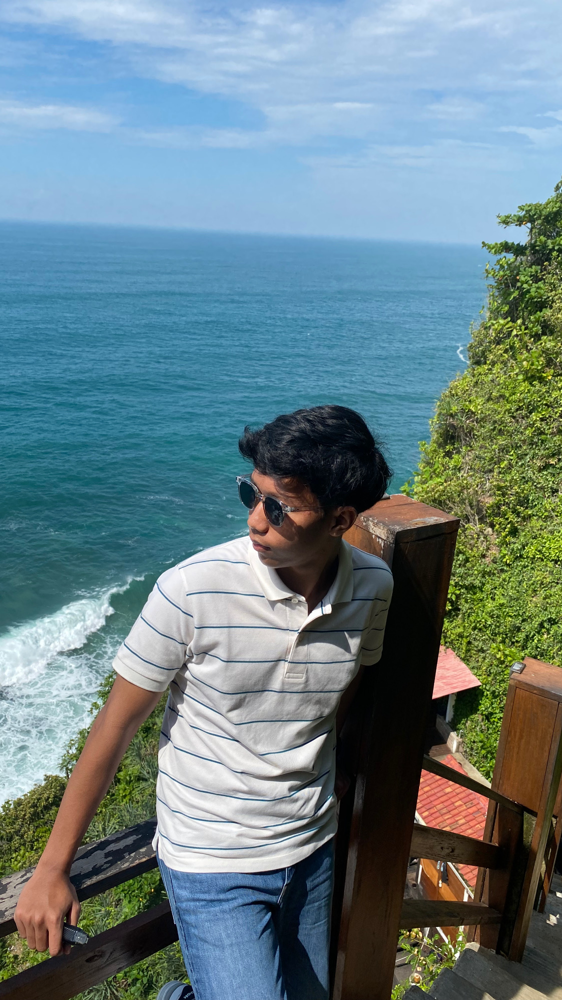
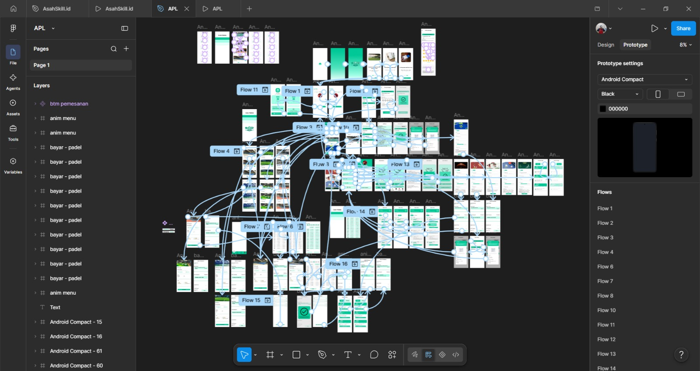
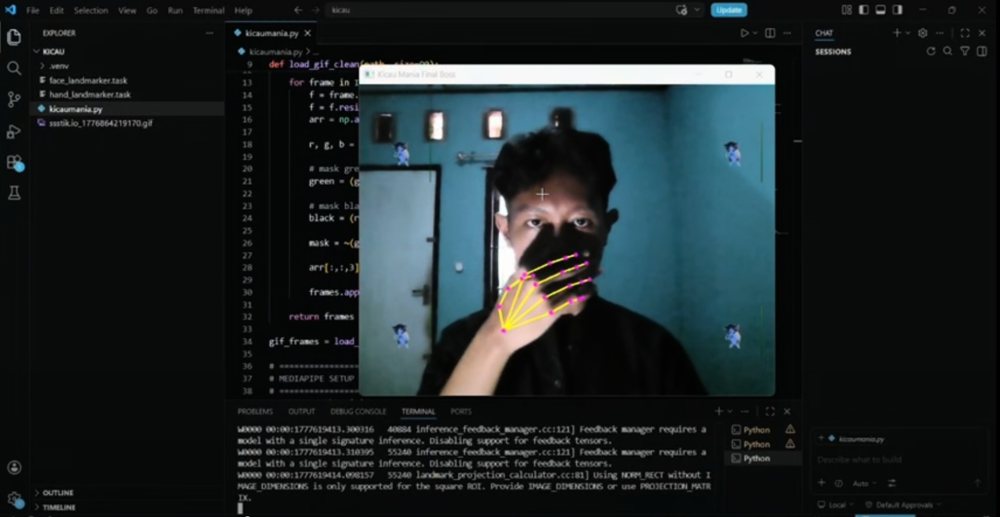
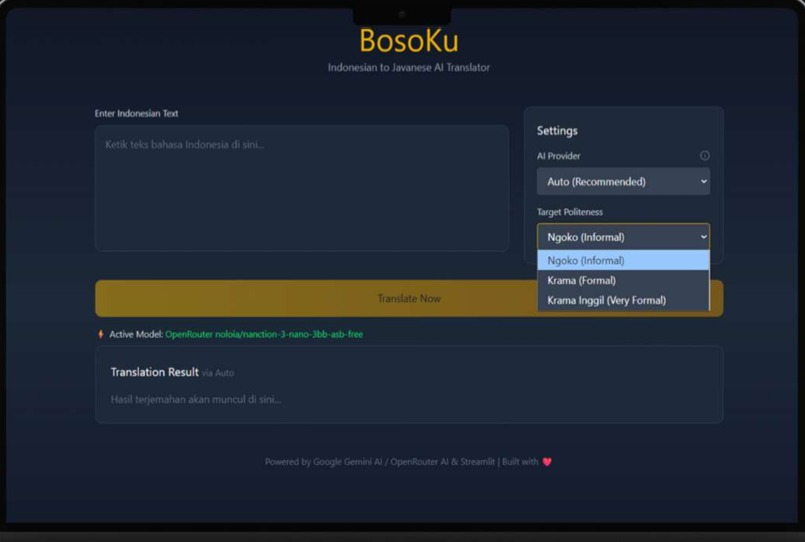
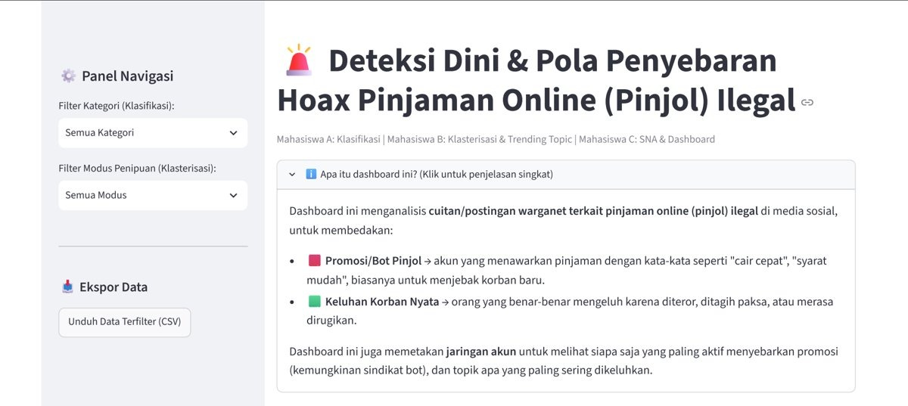

⌘
Frontend
Membangun interface web yang responsif dan nyaman digunakan.
Halo, nama gue
Mahasiswa Fakultas Teknologi Informasi semester 5 yang tertarik pada pengembangan web, desain digital, dan bagaimana teknologi bisa menyelesaikan masalah nyata.

Gue percaya teknologi yang bagus bukan cuma soal fitur. Tapi juga soal pengalaman yang terasa simpel, berguna, dan mudah dipahami.
Saya adalah mahasiswa semester 5 di Universitas Budi Luhur, jurusan Sistem Informasi. Saya terus belajar membangun solusi digital lewat eksplorasi web development, UI/UX, dan project berbasis teknologi.
Let’s work together ↗Teknologi yang sedang gue pelajari dan gunakan dalam project.
Membangun interface web yang responsif dan nyaman digunakan.
Mengelola logika aplikasi, database, dan alur data.
Menyusun alur aplikasi dan tampilan dengan tools pendukung.
Dashboard untuk menyajikan data dan insight secara ringkas melalui visualisasi yang mudah dipahami.
↗
02Rancangan aplikasi mobile untuk booking lapangan olahraga dan pembayaran, mulai dari pilih jadwal, metode bayar, sampai konfirmasi. Disusun sebagai high-fidelity prototype di Figma dengan 16 alur (flow) yang saling terhubung, lengkap dengan micro-interaction dan animasi menu.
↗
03Game interaktif berbasis kamera yang mendeteksi wajah dan gerakan tangan secara real-time menggunakan MediaPipe Face Landmarker dan Hand Landmarker, memicu animasi dan efek sesuai gestur pemain.
↗
04Aplikasi penerjemah teks Bahasa Indonesia ke Bahasa Jawa (Ngoko, Krama, Krama Inggil) berbasis AI, dibangun dengan Streamlit.
↗
05Dashboard analisis media sosial untuk mendeteksi promosi pinjaman online ilegal, mengelompokkan pola modus, dan memetakan jaringan penyebarnya.
↗Klik salah satu sertifikat untuk melihat gambar atau PDF lengkapnya.